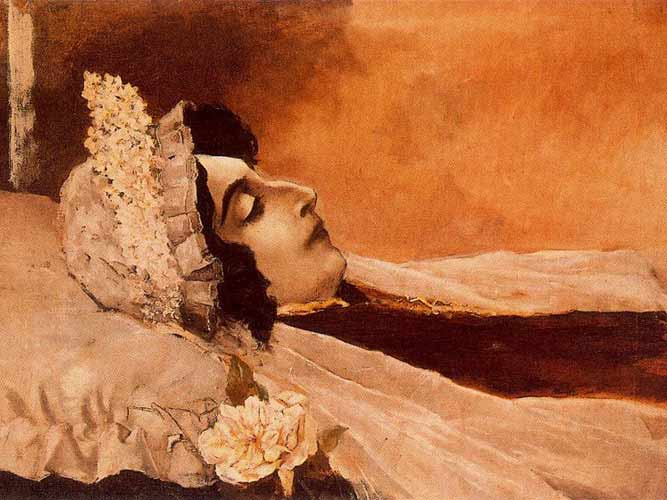

Aos dezanove anos, en 1857, Rosalía publica a súa primeira entrega lírica no xornal
La Iberia: La Flor. Manuel Murguía elabora, o 12 de maio dese ano, un comentario sobre a
obra, manifestando o talento desta nova voz. E aí cando ambos os mozos se coñecen.
O 10 de outubro de 1858, na igrexa madrileña de San Idefonso casan Rosalía e
Murguía. Segundo afirma Lama (2017), “ela estaba embarazada de dous meses” (p. 228).
Rosalía, ao igual que Murguía, móvese en círculos de xente republicana, de
pensamento aberto. Alí tamén vai establecer contacto Eduardo e Alejandro Chao. Xurxo
Martínez explicou que “Eduardo Chao foi fundamental na formación literaria e ideolóxica de
Rosalía” (comunicación persoal, 20 de decembro 2015). Tanto Murguía, Juan Compañel,
Alejandro Chao viven na órbita de Chao, dirixente deputado do Partido Demócrata. De feito,
Alejandro Chao é o padriño de Alejandra, a primeira filla de Rosalía e Murguía, e o editor de
Follas novas desde A Habana.


Aos dous anos de chegar a Madrid, Rosalía e Murguía voltan a Galiza. Hai diferentes versións de cal é o motivo do regreso, mais a máis coherente é a de Lama (2017), que explica que, despois dos 5 anos que Murguía levaba en Madrid de vida bohemia seu pai decátase de que non estaba a estudar e quitoulle o sustento económico. Agora, que ían ser nai e pai, precisaban regresar. Foi a familia Castro quen os acolleu. A primeiros de decembro instálanse nunha fonda da rúa Conga número 1, pertencente á compostelá Antonia Rodríguez. Ao ano seguinte, a escritora publica a súa primeira novela, La hija del mar, e comeza unha vida itinerante na que ambos os dous viaxan moito: Madrid, Compostela, Lestrobe, A Coruña, etc. Neses anos, a nai de Rosalía estivo ao coidado da neta, que naceu o 12 de maio tendo como madriña a ela e como padriño a Alejandro Chao. No ano 1861, cando estaba residindo algún tempo en Madrid, Rosalía, ademais de publicar o seu primeiro poema en galego na revista El Museo Universal, “Adios ríos; adiós fontes”, tamén publica por entregas Flavio, ambientada na Terra de Iria.
Nos seguintes anos publica varias obras: “Contos da miña terra” (1864), “Las literatas. Carta a Eduarda”, Ruinas (1866; novela publicada por entregas en El Museo Universal de Madrid), “El cadiceño” (1866), El caballero de las botaz azules (1867) e Follas novas (1880). Sentíndose morrer, a escritora mandou queimar todos seus manuscritos inéditos. Ás doce da mañá do 15 de xullo de 1885, aos 48 anos de idade, Rosalía de Castro falece na Casa da Matanza debido a un cáncer de útero. O 25 de maio de 1891 o seu cadáver foi exhumado e levado a Compostela, onde foi sepultado no mauselio creado ad hoc polo escultor Jesús Landeira, situado na capela da Visitación do Convento de San Domingos de Bonaval, hoxe Panteón de Galegos Ilustres.
